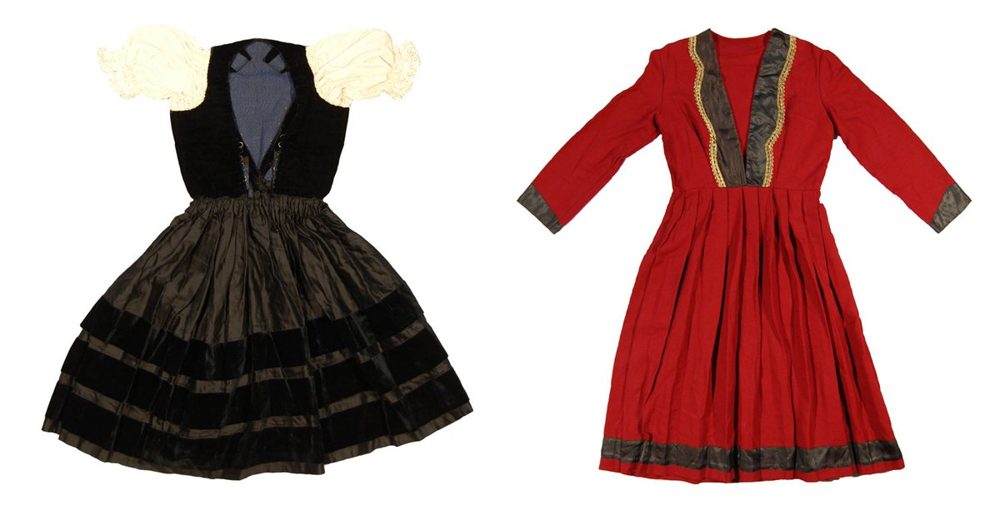

#EURO2016
During the #EURO2016 football competition, we are posting pairs of British Museum objects to represent the countries playing in every match. Now that the competition has reached the final 16 stage, here's a round up of the matches so far!
-
We’ll be celebrating #EURO2016 with Museum objects from the countries playing in each match! Who are you supporting? pic.twitter.com/YWInyoUdVD
-
For the first #EURO2016 match, we contrast fashions from #FRA & #ROU http:// ow.ly/XahH3014RCB http:// ow.ly/bT6e300XBuV pic.twitter.com/hPc345Mk5F
-
For #EURO2016 , a portrait of a Count in #ALB & politician from #SUI http:// ow.ly/DEDb300XFSZ http:// ow.ly/Hymy300XGkO pic.twitter.com/BjS6ruezUu
-
Banknotes from #WAL and #SVK for #EURO2016 http:// ow.ly/BClQ300ZBqs http:// ow.ly/KHn6300ZBrx #WALvSVK pic.twitter.com/TWfJTksWpb
-
Plates from #ENG and #RUS for tonight’s #EURO2016 match http:// ow.ly/m8Eq300ZBXP http:// ow.ly/i232300ZBYB pic.twitter.com/AK1bBrnJcc
-
For today's #EURO2016 match, a lavta from #TUR and a lute from #CRO http:// ow.ly/3kLt300Y24y http:// ow.ly/59IJ300Y279 pic.twitter.com/VigJGHngyz
-
Lovely landscapes depicting #POL and #NIR for #EURO2016 http:// ow.ly/r0GZ300Y15Q http:// ow.ly/kCAs300Y1bf #POLvNIR pic.twitter.com/p6vRW6ugEn
-
Brooches inlaid with garnet found in #GER and #UKR http:// ow.ly/ZXal300XQPr http:// ow.ly/kouY300XQSt #EURO2016 pic.twitter.com/l4XfFpa2CY
-
For #EURO2016 , earthenware cup from #ESP & ostrich egg cup from #CZE http:// ow.ly/WsMT300Y7Y7 http:// ow.ly/Fxrq300Y812 pic.twitter.com/nB7OnnA4VJ
-
Viking brooches from #IRL and #SWE for #EURO2016 http:// ow.ly/1s1x30141Vz http:// ow.ly/4Z3P301420N #IREvSWE pic.twitter.com/z8qma0cEAc
-
Divine drawings by Rubens and Raphael for #BEL and #ITA #EURO2016 http:// ow.ly/o16Z30144bR http:// ow.ly/OHTx30144dX pic.twitter.com/pOnI2jBzFD
-
Brooch from #AUT and a pendant from #HUN for their #EURO2016 match http:// ow.ly/mbRI3014OKe http:// ow.ly/t6jI3014ODI pic.twitter.com/QvP2vwEpUK
-
An earthenware tile from #POR & porridge-pot lid from #ISL http:// ow.ly/JJb83015wU2 http:// ow.ly/L5Hi3014PKp #EURO2016 pic.twitter.com/xdrr6VMaCM
-
Women’s bonnets from #RUS and #SVK for today’s first #EURO2016 match http:// ow.ly/8MS9300ZCbh http:// ow.ly/t0aC300ZCcC pic.twitter.com/zyqEVSNUzt
-
 Earthenware jug from #ROU & porcelain teapot from #SUI for #EURO2016 http:// ow.ly/yd3H301f7kJ http:// ow.ly/3jZW301f7gU pic.twitter.com/pugWnQYFsx
Earthenware jug from #ROU & porcelain teapot from #SUI for #EURO2016 http:// ow.ly/yd3H301f7kJ http:// ow.ly/3jZW301f7gU pic.twitter.com/pugWnQYFsx -
Women’s dresses from #FRA & #ALB for their #EURO2016 match tonight http:// ow.ly/gq0A300XJcS http:// ow.ly/ol4Y300XJ97 pic.twitter.com/EMu5ERJLjC
-
Three lions for #ENG vs dragon for #WAL #EURO2016 http:// ow.ly/dw0p301jYkM http:// ow.ly/pglC301jYm4 #ENGWAL pic.twitter.com/0LZksUJFcA
-
Brooch found in #UKR & belt-fitting found in #NIR http:// ow.ly/65kn300XY6w http:// ow.ly/HpYB301fEgC #EURO2016 #UKRNIR pic.twitter.com/a8IWXAoFRu
-
For tonight’s #EURO2016 match: table clocks made in #GER and #POL http:// ow.ly/e7ah300XZP6 http:// ow.ly/ssab300XZHa pic.twitter.com/eurNvFXghn
-
Gold ear-stud from #ITA and gold pendant found in #SWE for #EURO2016 http:// ow.ly/NnKA301fOqI http:// ow.ly/oTyV301fOnj pic.twitter.com/aotDtFkOBE
-
Crystal cup made in #CZE & wine bottle from #CRO for #EURO2016 http:// ow.ly/LEZM301fX3M http:// ow.ly/YQdF301fX6K pic.twitter.com/LX9LpPAhQB
-
A tile from the Alhambra in #ESP and Iznik tiles from #TUR http:// ow.ly/Pcnj300YjQA http:// ow.ly/4TkV300YjWP #EURO2016 pic.twitter.com/qp9HaKJtDr
-
Gold necklaces found in #BEL and #IRL for their #EURO2016 match http:// ow.ly/soFm301h5aV http:// ow.ly/BlvB301h58B pic.twitter.com/qsbZk5lwWY
-
 Coin with dolphins from #ISL & coin with a horse from #HUN http:// ow.ly/ZapS301h6sy http:// ow.ly/TDCT301h6u8 #EURO2016 pic.twitter.com/77QnlIp9lE
Coin with dolphins from #ISL & coin with a horse from #HUN http:// ow.ly/ZapS301h6sy http:// ow.ly/TDCT301h6u8 #EURO2016 pic.twitter.com/77QnlIp9lE -
Dishes from #POR & #AUT decorated with animals and foliage #EURO2016 http:// ow.ly/fEYG301h8ic http:// ow.ly/IU7p301h8jz pic.twitter.com/jmKY7nMjWO
-
Watch from Geneva in #SUI & clock-watch from Lyon in #FRA http:// ow.ly/594p301m4Dv http:// ow.ly/q5QQ301m4Ca #EURO2016 pic.twitter.com/TxduznEV8v
-
Waistcoats from #ROM and #ALB for their #EURO2016 match tonight http:// ow.ly/f38i300XDq3 http:// ow.ly/t6Gh300XDxM pic.twitter.com/FqXgFjspKo
-
Markets in Zvolen, #SVK and Newgate, #ENG for #EURO2016 http:// ow.ly/yeMw301iiqt http:// ow.ly/NVro301iis9 #SVKENG pic.twitter.com/A5u6GbbllN
-
Porcelain tea-sets from #RUS and #WAL for their #EURO2016 match http:// ow.ly/C0oj301igAq http:// ow.ly/cPnH301igBI pic.twitter.com/C5THL49Ghi
-
Earrings found in #UKR and #POL for their #EURO2016 match today http:// ow.ly/obq4301tcHa http:// ow.ly/Bsw8301tcIA pic.twitter.com/ZwaRWhTAVp
-
Brooches found in Antrim, #NIR and Meckenheim, #GER for #EURO2016 http:// ow.ly/1eCz301u6e2 http:// ow.ly/ejof301u6bZ pic.twitter.com/0sKJPN4Boy
-
Glass decanter from #CZE and ceramic flask from #TUR http:// ow.ly/X3Nz300Y7Iy http:// ow.ly/pMZ6300Y7Gg #EURO2016 pic.twitter.com/i7HuXuevzD
-
Embroidered cuff from #CRO and embroidered purse from #ESP http:// ow.ly/YrIW301tXx4 http:// ow.ly/ZjBB301tcPc pic.twitter.com/5si2Im3gz2
-
Prints depicting #ISL and #AUT for their #EURO2016 match today http:// ow.ly/26Yc301tcT4 http:// ow.ly/dHYa301tcUt pic.twitter.com/4r7m0HZzJa
-
Bronze Age gold necklaces found in #HUN and #POR for #EURO2016 http:// ow.ly/WFk3301td2f http:// ow.ly/aIPK301tcZY pic.twitter.com/t9zsUEnpNb
-
Beautiful gold brooches from #ITA and #IRL for #EURO2016 http:// ow.ly/XYwC301vGcO http:// ow.ly/1Z8N301vGaX #ITAIRL pic.twitter.com/1K8rqTCogA
-
1930s coffee pot from #SWE & 1550s water jug from #BEL for #EURO2016 http:// ow.ly/aRQ3301td8C http:// ow.ly/fLna301td9j pic.twitter.com/1jCPBYkAqL